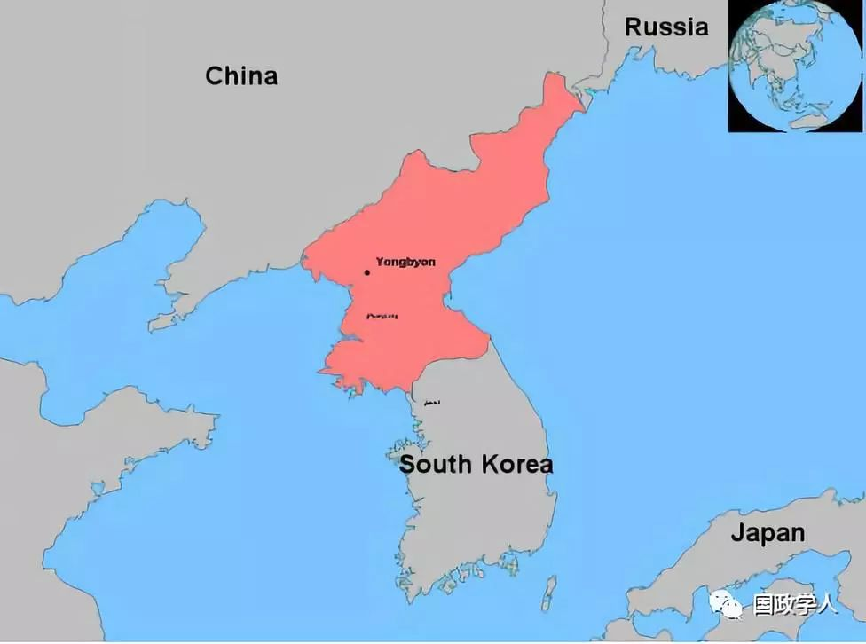

收录于合集

简 介
【作者】 董向荣，中国社会科学院亚太与全球战略研究院研究员。
【期刊】 《东北亚论坛》2019年第1期，第102-115页。
【整理】 崔宇涵
【校对】 李玉婷

内容摘要
安全困境是现实主义理论的核心概念，常被用来分析围绕朝鲜半岛问题的安全困局。但是，安全困境的定义非常严格，适应的场景有限。“无政府状态”“双方均无恶性意图”“包括进攻能力在内的权力累积”等是安全困境必不可少的三个方面。在实际应用中，“双方均无恶性意图”这一点经常被模糊或忽视，导致安全困境概念被滥用。朝鲜半岛主要力量之间的博弈，包括朝韩、朝美等，很难用安全困境来解释。韩中、韩俄之间围绕萨德的博弈属于安全困境，但在萨德问题上韩国只是配角，作为主角的美国有蓄意破坏地区战略平衡、置中俄于不安全境地的主观意图，因此美俄、美中之间围绕萨德问题的博弈不属于安全困境。如果不从军备竞赛和敌意螺旋的角度，而是从“安全困境”的角度来解释当前朝鲜半岛安全困局的话，不能把握问题的实质。
关键词： ****安全困境；安全困局；军备竞赛；敌意螺旋；朝鲜半岛
正 文
安全困境是国际政治现实主义流派的核心概念。在现实主义的话语体系中，典型的安全困境是指：当一个防御性现实主义国家寻求增加自身安全而采取的手段，具有不经意间损害他国安全的效果时，它的邻国或对手也会诉诸同样的手段，增加军备。这样一来，与增进本国安全的愿望相悖，该国加强军备的行为更有可能使得所有国家更不安全，因为它引起各方加强军备，提高了所有各方面临的潜在威胁水平。通俗地说，安全困境所描述和解释的是，“为什么我本无意伤害你，我们却走向了互相伤害”。
近些年来，不少学者用安全困境分析朝鲜半岛各行为体之间在安全领域的互动。根据2018年9月13日通过“中国知网”的搜索，在“文献”“全文”项下，搜索“朝鲜半岛安全困境”，有1070 个搜索结果。同样，根据2018 年9 月13 日通过“中国知网”的搜索，在“文献”“全文”项下，搜索“东北亚安全困境”，有1178 个搜索结果。在前述既有研究文献中，有的学者用“安全困境”，表示在东亚地区、东北亚或朝鲜半岛面临着纷繁复杂的“安全难题”，或者说是“安全困局”，这类文献并不是从现实主义学派的安全困境概念来解释地区安全难题的文献，因此，这部分文献不是本文的分析对象。也有一些学者是引用国际政治领域现实主义理论安全困境作为分析框架中的核心概念。根据2018 年9 月13 日通过“中国知网”的搜索，在“期刊”“句子搜索”项下，搜索在全文“同一段”话中，含有“朝鲜半岛”和“安全困境”的文章，“并且”在全文“同一段”话中，含有“现实主义”和“安全困境”的期刊文章，有98 个搜索结果，除去明显不符合的6 个杂志目录外，有92个搜索结果是大致符合本文要求的有效结果。同样，在“博硕士”“句子搜索”项下，按照上述搜索要求，有109个搜索结果，即，有109 篇博士或硕士学位论文是大致符合本文搜索要求的有效结果。这201篇期刊文章和博士硕士论文，时间跨度从2001 年到2018 年。可见，在朝鲜半岛研究中用现实主义安全困境的理论框架是比较常见的现象。但是问题在于，安全困境的核心假设是“无意损害”，而在朝鲜半岛主要当事国之间的军事互动，并不符合这一假设。朝鲜半岛当前的安全困局，很大程度上并不符合安全困境的基本假设，不属于安全困境的概念范畴。
1 **现实主义关于安全困境的理论解释
**
唐世平 曾对现实主义进行了理论上的梳理，他从现实主义视角将国家做了进攻性现实主义国家和防御性现实主义国家的区分。一般而言，所谓进攻性现实主义国家，即，自身是恶意的，本国认为其他国家也是恶意的，因此只有武力和（暂时的）联盟可以获得安全。安全不能够由安全合作获得，因为（真正意义上的）合作是不可能的。由此一来，国家的安全战略相对简单，即通过经济增长和武力扩张获得安全。国家的安全战略基本上只由能力和机会决定。而所谓防御性现实主义国家，即，自身是善意的，该国也认为不是所有的国家都是恶意的：有的是，有的不是，要仔细观察和区分。从解决安全诉求的方法来看，除了武力和（暂时的）联盟可以获得安全之外，国家也可以通过安全合作来获得安全。防御性现实主义国家认为真正意义上的合作是可能的。对于防御性现实主义的国家而言，其安全战略相对复杂：国家的安全战略根据对其他国家意图的判定而定。对善意的国家，要积极寻求合作，包括制度化的合作；对恶意的国家，抵抗（但不发动战争）并寻求以和平方式改变对方；对不确定的国家，试图了解对方的意图，然后视情况而定。
唐世平分析了约翰·赫茨（John Herz）、赫伯特·巴特菲尔德（Herbert Butterfield）、罗伯特·杰维斯（Robert Jervis）等学者关于安全困境的定义，概括抽象出这个概念的三个必不可少的核心要素，即“无政府状态”“双方均无恶性意图”“权力的积聚（包括进攻性的能力）”。可以看出，“无恶意”是判断两国之间的互动是否是安全困境的必要因素，缺此不可。正如兰德尔·施韦勒（Randall L. Schweller）、格伦·斯奈德（Glenn H. Snyder）所论述的那样，当一国或两国均故意彼此威胁时，它们之间就并不存在真正的安全困境。
安全困境的概念，着重于解释为什么没有敌意的双方，仅仅因为过分高估了对方可能的敌意或者因为对方意图的不确定性，而走向军备竞赛甚至战争的状态。
唐世平曾对现实主义进行了理论上的梳理，他从现实主义视角将国家做了进攻性现实主义国家和防御性现实主义国家的区分。一般而言，所谓进攻性现实主义国家，即，自身是恶意的，本国认为其他国家也是恶意的，因此只有武力和（暂时的）联盟可以获得安全。安全不能够由安全合作获得，因为（真正意义上的）合作是不可能的。由此一来，国家的安全战略相对简单，即通过经济增长和武力扩张获得安全。国家的安全战略基本上只由能力和机会决定。而所谓防御性现实主义国家，即，自身是善意的，该国也认为不是所有的国家都是恶意的：有的是，有的不是，要仔细观察和区分。从解决安全诉求的方法来看，除了武力和（暂时的）联盟可以获得安全之外，国家也可以通过安全合作来获得安全。防御性现实主义国家认为真正意义上的合作是可能的。对于防御性现实主义的国家而言，其安全战略相对复杂：国家的安全战略根据对其他国家意图的判定而定。对善意的国家，要积极寻求合作，包括制度化的合作；对恶意的国家，抵抗（但不发动战争）并寻求以和平方式改变对方；对不确定的国家，试图了解对方的意图，然后视情况而定。
唐世平分析了约翰·赫茨（John Herz）、赫伯特·巴特菲尔德（Herbert Butterfield）、罗伯特·杰维斯（Robert Jervis）等学者关于安全困境的定义，概括抽象出这个概念的三个必不可少的核心要素，即“无政府状态”“双方均无恶性意图”“权力的积聚（包括进攻性的能力）”。可以看出，“无恶意”是判断两国之间的互动是否是安全困境的必要因素，缺此不可。正如兰德尔·施韦勒（Randall L. Schweller）、格伦·斯奈德（Glenn H. Snyder）所论述的那样，当一国或两国均故意彼此威胁时，它们之间就并不存在真正的安全困境。
安全困境的概念，着重于解释为什么没有敌意的双方，仅仅因为过分高估了对方可能的敌意或者因为对方意图的不确定性，而走向军备竞赛甚至战争的状态。
2
朝韩对抗： 不属于安全困境
首先，朝韩双方互不承认对方，都谋求以自己的模式统一半岛，至少不被对方以对方的模式统一自己。
朝鲜和韩国于1991 年9 月17 日同时加入了联合国，朝韩双方作为联合国正式成员国已有27 年之久，但是在朝韩各自的宪法中，依然是把国土定义为整个朝鲜半岛。尽管都是联合国成员国，但朝韩之间并未建交。朝韩都不把对方作为普通的外交对象，而主要是从民族内部事务的角度来看待南北关系。从根本上来说，双方都是以消灭对方的客观存在、实现统一为基本目的，至少要保证自身的生存，而不是被武力吞并或和平吸收统一。比如，韩国现行宪法（1987年10月29日）第一章第三条明确规定，“大韩民国的领土为韩半岛和其附属岛屿”。而朝鲜宪法2016年版第一章第一条中明确规定，“朝鲜民主主义人民共和国是代表全体朝鲜人民利益的自主的社会主义国家”。
由于所处的国内国际环境不同，历届韩国政府在追求民族统一的大目标之下，制定和实施了不同的对朝政策。如果把历届韩国政府的统一政策进行简单分类的话，大体可分为两大类：其一是“武力统一”，以李承晚政府为代表；其二是“和平统一”，涵盖多数政府。1950 年朝鲜战争爆发的大背景就是，北边想“南进统一”、南边想“北进统一”。美韩签署《相互防御协定》很重要的一项内容，就是限制李承晚政府可能对北方发起武力行动。李承晚政府之后，朴正熙政府在意识到统一目标暂时难以实现的情况下，着眼于长远，开始与朝鲜展开体制竞争。这一政策一直延续至卢泰愚政府时期。冷战时期的韩国政府并未放弃对民族统一目标的追求，朴正熙政府和全斗焕政府曾分别提出过“和平统一三大原则”和“民族和解民主统一”的方案，但冷战结构的制约使得韩国政治精英意识到，统一在当时的情况下并不现实。冷战结束后，卢泰愚政府“北方外交”获得成功，使得过去难以企及的奢望成了似乎可以进行现实追求的目标，追求民族统一开始回归至韩国政府对朝政策的核心位置。大体而言，冷战后韩国对朝政策的总体性“和平统一”范式进一步分化为“进步”（“温和”）与“保守”两种类型，各政府的对朝政策在进步与保守的谱系中区别定位。朴槿惠政府时期，韩国提出“统一大发论”，在采取行动解决统一问题上更加积极。进入到文在寅政府时期，韩国强调在南北和解的基础上展开合作，缓解敌对关系成为政府谋求的主要目标。
关于统一问题，朝鲜2016 年版宪法序言中指出，“伟大的金日成同志和金正日同志是民族的太阳、祖国统一的救星。金日成同志和金正日同志把统一祖国作为民族至高无上的任务提了出来，并为其实现而呕心沥血。金日成同志和金正日同志把共和国建成了统一祖国的强大堡垒，同时，提出了统一祖国的根本原则和途径，把统一祖国的运动发展成为全民族运动，开辟了用全民族团结的力量完成祖国统一大业的道路。”当前南北之间常规军事力量对比，朝鲜处于明显的劣势，为避免被武力统一或和平吸收统一，朝鲜可能认为只有仰赖核武器。韩国方面也的确认为，核武器是朝鲜谋求武力统一的重要工具。2012 年，朝鲜将此前的“金日成宪法”修订为“金日成—金正日宪法”，该版序言中写道：“金正日同志使我们祖国变成不败的政治思想强国、核拥有国、无敌的军事强国，为建设富强繁荣的国家铺设道路。”这是朝鲜宪法首次提及“核拥有国”。朝鲜2016 年版宪法序言中指出，“针对世界社会主义体系崩溃和帝国主义联合势力疯狂的反朝扼杀活动，金正日同志用先军政治出色地维护了金日成同志宝贵的遗产——社会主义胜利果实，把我们祖国变成不可战胜的政治思想强国、核保有国、无敌的军事强国，开辟了建设社会主义强国的康庄大道。”
任何以将对方的领土和国民纳入本国行政管辖范围的行为，从理论上说，都是“扩张主义”的，是进攻性现实主义的，都无法用安全困境的概念来解释。从朝韩之间以统一为目标的政策基调来看，双方之间的对抗不属于安全困境。
其次，《朝鲜停战协定》不是《终战协定》，法理上朝韩仍处于战争状态。1950 年6 月25 日，朝鲜战争爆发。27 日，美国正式参战。至8 月中旬，朝鲜人民军将大韩民国国军驱至釜山一隅，攻占了韩国绝大多数的土地。9 月15 日，以美军为主的联合国军在仁川登陆，开始大举北进。中国人民志愿军应朝鲜请求于10 月25 日赴朝参战。1951 年7 月10 日双方开始停战谈判，边打边谈，最终于1953 年7 月27 日在《朝鲜停战协定》上签字。《朝鲜停战协定》，全称《朝鲜人民军最高司令官及中国人民志愿军司令员一方与联合国军总司令另一方关于朝鲜军事停战的协定》。在非军事区韩国一边，仍可见到“现在仍在战争中”等宣传标语，彰显备战的重要性和紧迫性。
再次，在韩国《国防白皮书》中，朝鲜是韩国面临的最主要的军事威胁。在20 世纪90 年代，韩国在数本国防白皮书中把朝鲜明确界定为“主敌”。2004 年，这一表述被删除。在2010年至2016 年的《国防白皮书》中，采用“北韩政权和北韩军是我们的敌人”等类似表述。据称，随着2018 年朝鲜半岛局势缓和，韩国文在寅政府正在考虑在新的《国防白皮书》中改变过去的“敌人”表述，改为“潜在的威胁”等。可见，韩国国内保守势力和进步势力在对朝鲜是不是敌人、朝鲜军队是不是敌军的问题上，认识有不少差异。
3 朝鲜和美国之间：赤裸裸的武力威胁
但各自都有社会主义或资本主义阵营内不少邦交国承认其主权国家的特性，但是中苏与韩国、美日与朝鲜之间未能相互承认并建立正常的国家关系。韩国通过“北方外交”实现了被苏联、中国等社会主义国家承认的目标，而朝鲜错失良机。在韩国被承认而朝鲜未被承认的情况下，韩朝发展的国际环境出现了根本性的分野。
在20 世纪80 年代中期之前，韩国由于处境极为不利，积极支持“交叉承认”构想，以图取得国际社会对其合法性的认可；而当时的朝鲜却坚决反对“交叉承认”，认为它是企图永久分裂朝鲜半岛的帝国主义阴谋。然而，80 年代中期以后，国际环境发生了巨大变化，朝韩对待“交叉承认”的立场也随之戏剧性地发生了逆转。韩国在“北方外交”的旗帜下于1990 年完成了与苏联建交，与中国的关系也得到了改善，最终朝韩共同于1991 年加入联合国。随后，1992年韩国与中国建交，韩国的“北方外交”得以完成。而朝鲜迟迟不能与美国和日本建立外交关系，在经济发展方面，失去了传统的社会主义国家市场的朝鲜，未能实现成功的转型和拓展。在军事上，朝鲜选择了核开发道路。20 世纪90 年代中期第一次朝核危机爆发，1994 年的《朝美核框架协议》未能让朝鲜弃核。21 世纪初第二次朝核危机以来，朝鲜加速进行核导开发，2005年六方会谈达成的《9 · 19 共同声明》被弃之如敝屣。联合国安理会数十个涉朝决议和主席声明被置若罔闻，朝鲜日益与国际社会相对抗。
朝鲜之所以把斗争的目标选为美国，主要原因如下：一是作为世界事务的主导国家，美国在代表国际社会维护国际核不扩散机制，若朝鲜拥核将严重破坏国际核不扩散机制；二是朝鲜一直未能与美日建交，“交叉承认”进行了一半就陷入停滞，近三十年来一直未进行另一半。对朝鲜来说，如果不能实现与美国关系的正常化，外交困局无望打破；三是美国是朝鲜半岛分裂的主要推手，美国在韩国驻军，美韩在常规力量上对朝鲜形成了明显的遏制。
再次，朝美之间的军事威胁愈演愈烈，二者都已充分感受到对方的敌意。在朝鲜看来，美国扼杀朝鲜的敌意是很明显的，伊拉克、利比亚、叙利亚等都是“前车之鉴”：不拥核的对立小国动不动就被美国武力打击。而迄今为止，还没有任何一个核拥有国曾经遭受过外来军事打击。朝鲜也是在国际社会中不断进行观察和学习的国家，而且学习能力很不一般。如果说20世纪90 年代中期第一次朝核危机爆发后，朝鲜与美国在1994 年达成了《核框架协议》，那时朝鲜弃核的可能性还比较大的话，那么，在经历过二十多年的发展后，朝鲜对外部世界、对美国的认识已经完全不同于以往。以美国为首的西方国家的干预下，中东和北非动荡不安，继突尼斯的本·阿里、埃及的穆巴拉克、利比亚的卡扎菲政权垮台，叙利亚的巴沙尔政权亦出现严重危机，这种状况进一步加深了朝鲜的不安全感，也使朝鲜进一步认识到放下核武可能遭遇的困境。在国际社会看到伊朗核问题即将通过和谈达成协议的方式得到解决的情况下，美国特朗普政府撕毁伊朗协议。根据朝鲜《劳动新闻》的报道，朝鲜人权研究协会发表控告书，批评“美国和西方国家招致史上最大的难民潮，粗暴地蹂躏难民权利”。控告书说，“伊拉克、阿富汗、利比亚、也门等许多国家被美国的魔掌染指，变成一片废墟、饱受战乱折磨，都沦为了难民大国、难民源泉国……美国借‘９·11’事件发动的‘反恐战’，是针对主权国家的国家恐怖行径、变相的新的侵略战争活动……美国未经任何人批准和邀请，恣意对叙利亚进行狂轰滥炸。美国和西方国家一手策划的‘阿拉伯之春’造成的长期战乱，使地区国家乌烟瘴气、民不聊生、颠沛流离。”对任何国家而言，维持国家安全、政权生存都是第一需要。从朝鲜的角度来看，核武器使朝鲜能够避免美国的军事打击、保证本国的生存。美国在一定程度上也是与韩国绑定、试图消灭朝鲜的进攻性现实主义国家。
朝鲜有没有意图和能力攻击美国？多年来，朝鲜对美国的口头威胁比比皆是。2017 年朝鲜的洲际导弹ICBM 的开发获得突破之后，朝鲜核导能力已经影响到美国的安全，朝鲜对关岛的口头威胁和考虑到朝鲜的潜在能力，使美国对威胁的认知更加真切。在外界强大的军事威慑和经济制裁压力下，朝鲜明显加快了核导开发的步伐，力图加速完成核武器开发的收官阶段。2017 年7 月4 日和28 日，朝鲜进行了两次“火星-14”型洲际弹道导弹试射。根据《劳动新闻》的报道，2017 年8 月8 日，朝鲜人民军总参谋部发言人表示，“特朗普等美国当局的侵朝核战争狂热已越过红线，到了极为冒险、鲁莽的实战行动阶段。”“对于美国仍旧迷恋于针对朝鲜革命最高首脑部的‘斩首行动’的挑衅行为，一旦发现稍微迹象，将立即开始朝鲜式先发制人的报复行动，以消灭卑鄙的阴谋集团”。2017 年8 月10 日，新华社报道，朝中社援引朝鲜人民军战略军发言人8 月８日发表声明说，为压制和牵制美国战略轰炸机所在的关岛安德森空军基地等军事基地，并向美国发出严重警告的信号，朝鲜人民军战略军正慎重考虑用“火星－12”型中远程战略弹道导弹对关岛周边进行包围打击的作战方案。有关部门将对方案进行充分研究和拟订后上报朝鲜最高司令部，金正恩一旦做出决断，方案将随时付诸实施。
在2018 年新年贺词中，朝鲜领导人金正恩指出，2017 年“美国及其追随势力的对朝孤立扼杀阴谋活动达到极点，我国革命事业面临史无前例的严峻挑战。在局势紧张、前进道路上遇到最险恶困难的情况下，我们党相信人民，人民誓死拥护我们党，实现化险为夷，转祸为福，在社会主义强国建设事业各条战线取得了辉煌的成就。”2017 年，“我们断然进行各种核弹运载工具的试射与超强力热核武器的试爆，从而顺利地、成功地实现我们的总的志向和战略目标，我们共和国终于拥有了任何力量用任何方法都无法撤除的强有力的、可靠的战争遏制力。我国的核武力足以粉碎和应付美国任何形式的核讹诈，是压制美国不敢冒险玩火的强大遏制力。美国绝不敢向我和我国发动战争。美国必须明白，美国本土全境已进入我们的核攻击射程内，核按钮始终放在我办公室办公桌上，这并不是威胁，而是事实。”
外界在观察特朗普政府的对朝政策时，通常会把洲际弹道导弹和第六次核试验作为标志性的事件。2017 年8 月29 日，朝鲜导弹穿越日本上空，安倍首相急忙与美国总统特朗普通电话，商讨共同的应对方案。9 月3 日，朝鲜对外宣布，能够搭载在洲际导弹上的氢弹试验获得成功。由于时差关系，特朗普获知朝核试验的消息可能较晚，但他几乎在睡醒后第一时间，就在推特上称“朝鲜是一个流氓国家，朝鲜进行了一次大的核试验，行动和言语都对美国很有敌意，很具危险性”。特朗普还对韩国喊话，“正如我已经告诉他们的那样，韩国也总算发现，他们的绥靖政策不会影响朝鲜任何事情，因为他们只理解一件事”！特朗普9 月19 日首次在联合国发表演讲，向朝鲜发出严重警告，威胁称，“美国有强大实力和极大耐心，但如果被迫自卫或是保护其盟友，那么将别无选择，只能彻底摧毁朝鲜。”其实，可能激怒朝鲜的并不仅仅是“彻底摧毁”一说，还有特朗普在联合国的舞台上列举朝鲜在马来西亚采取VX毒剂杀人等所作所为。朝鲜罕见地以金正恩个人声明的方式强硬怒对。
朝鲜是如何看待美国的核威胁？根据《劳动新闻》2016 年的报道，朝鲜国际问题研究所曾揭批美国的“核犯罪”，认为美国历届当政者打着“核的和平利用”“核裁军”“不扩散核武器”“无核武器世界”之类的华丽招牌，欺骗和愚弄人类，为非作歹。不仅如此，“美国的犯罪嘴脸在对朝核政策中显得最为突出”。该报道列举了美国的对朝核威胁，包括朝美会谈开始时，克林顿政府曾向朝鲜承诺“不使用或威胁使用包括核武器在内的武力”（1993 年６月11 日朝美联合声明），但1998 年１月起在北卡罗来纳州萨莫雷·约翰逊基地多次进行以朝鲜为目标的核武器攻击模拟训练。小布什全面否认1994 年10 月21 日的朝美核框架协议和2000 年10 月12 日的《朝美联合公报》，把朝鲜列入为“邪恶轴心”、先发制人核打击对象（2002 年１月30 日的布什的国情咨文、2002 年３月的《核态势报告》）。2005 年９月19 日，美国在六方会谈联合声明中承诺“无意用核或常规武器攻击或侵略朝鲜”，然而于2006 年与韩国召开年度安保协议会，重申平时也将运进核航母、核潜艇和战略轰炸机等最新核战争装备。奥巴马政府于2010 年４月发表《核态度报告》，从不使用核武器对象名单中删除朝鲜；2014 年３月发表《４年国防战略评估报告》，把朝鲜定为“直接的威胁国家”，公然宣布“用核武装压制朝鲜”。最后，该报道强调，“只要美国存在，无核武器世界不过是一场白日梦，只有美国消失，地球村才能平安无事。有自主和正义的核强国——主体朝鲜在，人类要在没有战争的星球上自主和平地生活的理想必将实现”。
美朝的隔空威胁喊话并不是新鲜事，这是美朝、朝韩之间习以为常的互动方式。这一轮的对抗引起世界的关注，主要原因在于：一是朝鲜的核遏制力和运载能力上升很快，有潜力攻击到美国的盟国、海外军事基地和关岛等地，对美国及其盟友来说，朝鲜的威胁比以往任何时候都真实；二是习惯于在推特等社交媒体上发声的特朗普，引发了世界对朝核问题的关注，包括德国、英国、西班牙等东北亚域外国家都纷纷发声，呼吁和平解决朝核问题；三是核战争可能造成的核污染和巨大伤亡，令人不寒而栗。特朗普所说的“一件事”，很有可能是指对朝动武。作为外交政策稳定器的国务卿蒂勒森被解职，继任者是以强硬著称的中情局前局长蓬佩奥，新任总统安全顾问是“鹰派中的鹰派”博尔顿。美国主战内阁的形成，加大了朝鲜半岛发生军事冲突的可能性，形势不容乐观。
从对自身和盟友安全威胁的感知上讲，美国已经有相当的理由对朝鲜采取军事行动。如美国判断朝鲜对其有攻击的意图，且具备了相应的能力，那么美国对朝采取军事行动的可能性大增。这样的两个国家之间的相互威胁，能叫安全困境吗？显然不能。
有观点认为，朝鲜开发核武器是为了自保，不是为了攻击美国、韩国或者日本。即便朝鲜开发核武器是为了自保，也不能说朝韩之间、朝美之间的军事对抗是由安全困境所引起的。“寻求安全的动机”并不能等同于“没有恶意”。在无政府状态下，每个国家都是不安全的，都要寻求安全。“在生存意志和权力意志之间，是很难划分出一条清晰的界限的”。事实上，一些进攻性现实主义者明确地强调他们的理论从国家寻求安全的假定开始，结论恰恰是追求相对权力的最大化——而这就要求进攻性或有意威胁的行为——是迈向安全的最佳和唯一确定的路径。在统一对方、至少维持现状不被对方统一为目标的朝鲜半岛，特别是对于在经济和外交上处于劣势的朝鲜来说，发展军事是寻求安全的手段。在常规军事力量需要消耗巨大财力的情况下，发展具有不对称性的核遏制力就成为朝鲜政府的选择，尽管在当今国际格局中，朝鲜进行核导开发是受到联合国严格禁止、严厉制裁的。发展核武是朝鲜在经济、外交、常规军备落后的情况下选择的与韩国（及其背后的美国）进行军备竞赛的需要。这是典型的军备竞赛，是敌意螺旋，不属于安全困境。
4 韩中、韩俄之间的萨德争议是安全困境
2016 年7 月8 日，美韩联合宣布将在韩国部署萨德反导系统，引发中俄强烈不满。在韩中、韩俄之间，各方主要是防御性现实主义国家。在萨德的问题上，韩国强调来自朝鲜的威胁，声称自己是防御所用。从主观上来讲，韩国政府或者说主流社会，并没有要通过萨德来威胁中俄的意图，韩国政府一直这样强调，韩国民意也如此。
韩国盖洛普公司2017 年1 月17~19 日进行的民调结果显示，1004 名受访者中有51% 赞成部署萨德，40%反对，9%无应答。517 名支持部署萨德的受访者被问及赞成的理由，其中有61%的支持者认为，萨德是国家或国民安全的防御体系；20%的支持者认为部署萨德可以应对朝鲜的核导威胁；10% 的支持者认为可以牵制或遏制朝鲜；4%的支持者认为本国自身安保能力不足、不可避免地需要强国支持；另有4% 的支持者认为部署萨德可以强化韩美同盟；只有1% 的支持者认为部署萨德可以“牵制中国”。而在反对部署萨德的404 名受访者中，有20%认为萨德不必要或无效果；有17%认为萨德无益于增进国家利益；有12%的人是因为担心造成与中国等周边国家关系紧张或恶化而反对部署；另有10%的反对者是因为韩国政府未向国民说明或单方面推进部署。可见，从主观上看，在韩国民众支持部署萨德的原因当中，“牵制中国”只是极少数人的想法，在调查误差范围之内，几乎可以说是微不足道。而在反对部署萨德的韩国民众中，担心韩中等关系恶化是居第三位的重要理由。大致可以判断，主观上韩国并不想威胁中俄。
其实，如果没有朝鲜违反联合国决议，持续进行核试验和导弹发射实验的话，韩国的民意和政治生态不会向着支持部署萨德导弹的方向发展。对于一国选定部署某种武器而言，最重要的是两点：一是威胁的存在，二是该武器对于应对威胁的有效性。在韩国国内，对于萨德的军事有效性的质疑一直是存在的。早在金大中时期，就美国主导的战区导弹防御系统就曾做出结论：对于保护韩国安全是“无用之物”。卢武铉政府时期、李明博政府时期，尽管美国一直在积极推进在半岛部署萨德，但韩国都没有让萨德成为公众热议的问题。但是，随着朝鲜在2013 年2 月进行了第三次核试验、特别是在2016 年1 月进行了第四次核试验，以及多次导弹发射实验、特别是舞水端导弹发射成功之后，韩国政府决定部署萨德。韩国决策者和部分国民其实在这个过程中有一个大的逻辑缺陷，即在威胁加剧的情况下，武器的军事有效性似乎上升了，或者至少对高端武器的心理需求明显上升。实际上，由于朝韩之间的地理位置和山地地形特点，萨德导弹防御系统对于拦截来自朝鲜导弹威胁的有效性早就已经明了。只是因为，在威胁加剧的情况下，韩国决策者和国民认为韩国只能选择萨德防御系统。
从军事角度评价萨德的有效性，仅仅是问题的一个方面。 其实，韩国在很大程度上是看中萨德背后的深意，即进一步绑定韩美同盟，增大韩国对于美国的战略价值，这样一旦半岛有紧急事态出现，美国将继续发挥韩国安全守护者的角色。韩国前统一部长官柳吉在撰文指出，部署萨德的决定，向美国大选候选人发出巩固美韩同盟、加大对朝鲜遏制力的强烈信号，是韩国政府不得已的选择。随着朝鲜核威胁的提高，特别是在朝鲜2016 年1 月6 日、9 月9 日进行了第四次和第五次核试验之后，韩国民众中支持部署萨德的民众呈现明显的增加态势，不少政治人物在萨德问题上的立场出现变化，迎合选民、而不是引导选民，最终目标是赚取政治支持。早在2016 年7 月12 日，文在寅曾通过脸书表达自己的立场，认为韩国部署萨德失大于得，主要原因在于：当前半岛危机的核心是核问题，萨德使核问题更加难以解决，造成了国民舆论分裂，危及核问题上的国际合作，这是政府安全战略上无能的体现，也是韩国政府没有在政府内部、政府与国会之间、政府与国民之间进行充分沟通的单方仓促决定。因此他提出要对部署萨德的决定进行重新讨论。而在上台之后，考虑到美国对于韩国国家安全的重要作用，文在寅政府在萨德问题上持有“不推翻上届政府的决定”的立场，尝试着通过用一年左右的环境评价时间来获得国内外反萨德力量的认可。2017 年9 月3 日，朝鲜进行第六次核试验。文在寅当即决定，部署剩余四台萨德发射车，加速推进萨德部署。
从客观上来讲，萨德破坏了地区战略平衡，也恶化了韩中、韩俄关系，因为萨德X 波段雷达监控中国核心区，而俄罗斯只是相对边缘的远东地区，所以中国对韩国部署萨德的反应特别激烈，中韩关系受萨德的牵累明显下挫。而本质上讲，在中韩这一个安全困境中，双方都不想伤害对方的安全利益。甚至，双方互相示好、进一步深化和扩大双边关系的愿望都很强烈。对于中国来说，在1992 年与韩国建交后，中国政府一直致力于发展双边关系，并在2014 年习近平主席单独访问韩国达到顶峰。对于韩国来说，韩国也一直试图巩固与中国的关系，破除冷战和朝鲜战争时期的敌对，以2015 年时任总统朴槿惠参加中国9 · 3 阅兵式为顶峰。中韩都致力于发展经济、改善民生，两个“志同道合”的国家走向了“互相伤害”。
当安全困境出现的时候，双方所能做的，实际上只能缓解、而不能消除安全困境。尽管中国知道韩国无意威胁中国，但也不能容许中国的安全利益受到损害。在中韩之间关于萨德的安全困境出现之后，双方还是希望能采取合作的立场。特别是因为韩国决定部署萨德的朴槿惠政府被弹劾下台、文在寅新政府上台的背景下，中国希望韩方能够以建设性的做法在萨德问题上做出努力。韩国方面虽然在朝鲜核试验的情况下追加部署了已经运抵的四台导弹发射车，还是承诺对萨德的功能予以限制。
为缓解中韩之间的安全困境，文在寅政府试图通过对萨德功能进行限制。这是在外交上典型的示善或保证（reassurance）行为。所谓示善，首先是一种旨在向其他国家释放善意的信号发送行为，让他国减少对一国意图（并由此对一国的实力）的担忧；其次，示善也是了解他方意图的一种手段。一国通过做出合作姿态和发出合作邀请释放其善意，一国可以从他国对自己善意姿态的反应中推断他国的意图。在双方都是善意的情况下，示善行为可以增加两国之间的信任，促使双边关系进入更具合作性的模式。
对于文在寅政府的示善行为，中国予以了积极的回应。2017 年10 月31 日，中韩两国外交部称，中韩双方日前通过韩国国家安保室第二次长南官杓同中国外交部部长助理孔铉佑之间的渠道等，就半岛问题等进行了外交部门间沟通。双方分别发布的信息显示，韩方认识到中方在萨德问题上的立场和关切，明确表示在韩国部署的萨德系统按照其本来的部署目的，不针对第三国，即不损害中方战略安全利益。中方从维护国家安全的立场出发，重申反对在韩国部署萨德系统。同时，中方注意到韩方表明的立场，希望韩方妥善处理有关问题。双方商定通过两军渠道，就中方关切的萨德有关问题进行沟通。这个声明有些含蓄。随后，中国外交部发言人华春莹表示，中方注意到，韩方公开表示，韩方不加入美国反导体系，不将韩美日安全合作发展成三方军事同盟，也不追加部署萨德系统，目前在韩部署的萨德系统不损害中方战略安全利益。这一立场被概括为“三不一限”，限制已部署的萨德的波段等功能，确保不损害中方利益。中韩双方以此为基础，推动双边关系回到正常发展轨道。
5 美中 美俄在萨德问题上不是安全困境 **
**
在萨德问题上，韩国只是配角。萨德只是部署在韩国的土地上，萨德的运营权力掌握在美国手中，在非战时美国可以利用萨德收集中俄军事活动情报，在战时则会被直接用于军事行动。韩国部署萨德的防御行为不可避免地产生了自身防 御之外的影响，特别是破坏大国之间的战略平衡。韩国自我防御的一小步，美国全球导弹防御系统的一大步。导弹防御系统逼近中俄边境，对中俄的威胁之大，是韩国很难想象的。这是中俄所不能接受的，也正因为如此中俄会做出强烈的对应措施。即便假定韩国只是想维护本国的安全，但并不能排除美国在这一行动当中针对中俄的战略威慑。而后者恰恰是更重要的。
中国的核问题专家李彬教授认为，尽管韩国和美国政府宣称萨德系统不针对中国，但是，萨德系统的雷达过于强大，可以跟踪中国飞行中的一些导弹弹头。中国很自然地会担心萨德雷达用于搜集中国核弹头的重要数据，美国从其他渠道得不到这些数据，其结果可能会损害中国的核威慑能力，中国不得不做出反应。
中国官方是如何看待美国在韩国部署萨德系统的呢？2016 年2 月12 日，中国外交部长王毅在德国慕尼黑接受路透社专访表示，“我们对美国有可能在韩部署萨德反导系统的动向表示严重关切。萨德反导系统覆盖范围，特别是其X波段雷达监测范围远远超出半岛防卫需求，深入亚洲大陆腹地，不仅将直接损害中国的战略安全利益，也将损害本地区其他国家的安全利益。中国有两句古话，一句是：项庄舞剑，意在沛公。美国到底意欲何为？我看不用那么多专家来研究，明眼人一看就清楚。这正应了两千年前中国古人的另一句话：司马昭之心，路人皆知。中方的立场很明确，我们坚决反对任何国家企图借用半岛核问题侵害中国的正当权益”。
韩国有观点认为，中国外长王毅说韩美“项庄舞剑，意在沛公”的表达方式有问题，韩国只是在舞“盾”、在防御，怎么能说韩国在舞“剑”、在进攻呢？其实王毅部长的发言，只是强调美韩除了朝鲜以外另有所指、监视包围中国、损害中国安全利益的意思。
关于萨德是进攻性的“矛”还是防御性的“盾”的问题，也是辩证的。对于韩国来说，它只是防御性的“盾”；对于中俄来说，它是进攻性的“矛”。韩国认为萨德是韩国本土防御用，中俄认为萨德是为美国全球导弹防御系统（MD）所用。美国导弹防御体系的建立打破了既有的地区战略平衡，实际上是将中俄置于非常不利境地的进攻性武器，是“矛”而不是“盾”。略恐怖平衡是大国之间的博弈，中俄对萨德做出的反应相当强烈。中俄将根据自己对萨德性质的判断对美韩进行反制。2016年10月韩国国内政治因“崔顺实干政门”而严重动荡开始之后，美韩军方并没有暂停部署萨德，而是加快部署。
中美之间、俄美之间，双方基本上是防御性现实主义国家。各方至少不以从实体上消灭对方的存在为目标。由于恐怖威慑平衡的存在，核大国之间无战争成为一种常态。但是，一旦美国的全球导弹防御体系建成，恐怖威慑平衡被打破，就很有可能使中俄陷入极为不利的境地。这也正是中俄极力反对萨德导弹防御系统部署到朝鲜半岛的原因。美国以朝鲜的核武器为由部署萨德，可覆盖中国核心区的大部和俄罗斯远东地区。美国以伊朗核问题为由，在俄罗斯西部方向上部署萨德。俄罗斯通过在飞地部署导弹予以反制。美国的安全，是建立在打破战略平衡、使竞争对手中、俄更不安全的基础上，是故意的，不存在“不经意性”。
6 结 论
本文主要就安全困境概念在朝鲜半岛的应用进行了梳理。典型的安全困境是指，当一国寻求增加自身安全而采取的手段具有不经意间损害他国安全的效果时，它的邻国和对手也会诉诸同样的手段，增加军备，从而导致自己更不安全。“不经意性”或者“无意性”是安全困境假设的核心。安全困境是一个很有用的理论分析框架，但是它的适应场景是有限的。从政策含义来讲，如果双方原本是安全困境而未能按照安全困境来处理，高估对方的威胁，导致敌意螺旋上升，甚至酿成战争惨剧。而如果双方根本就不是安全困境，偏要用安全困境来进行分析的话，不能把握问题的实质，无助于问题的解决。
比如说，韩国与中国、韩国与俄罗斯在萨德问题上的冲突属于安全困境，那么就应该基于安全困境的内在逻辑来解决这一问题。韩国也清楚萨德可能在地区战略平衡上产生的影响，只是强调自身防御问题。韩国强调通过将雷达波段降低、缩小探测范围等方式，打消中俄对萨德的顾虑。韩国这样的克制行为缓解了韩中、韩俄之间的安全困境，却未能消除。从安全困境的视角来理解和解决中韩之间、俄韩之间的萨德问题，把握住了问题的实质性部分。遗憾的是，在韩国宣布部署之前，韩中、韩俄没有就限制雷达系统达成协议，而是后来在绕了一大圈之后，通过战略示善即限制雷达寻求与中国关系的转圜。这里值得深思的问题是，为什么韩俄、韩中在之前没有达成协议？中韩关系走的这段弯路原本是不是可以避免？中韩为此付出了多少代价？
再如，朝韩之间、朝美之间在很多安全问题上不属于安全困境。从根本上来说，双方没有把对方作为一个客观存在的、独立的、联合国成员国来看待。由于朝韩双方的意识形态严重对立、军事对峙以及双方都试图以自己的模式主导半岛统一，主观故意地在武力上压倒对方，朝韩虽为联合国成员国，但互相都没有将对方作为一个合法的国家来看待，而是将自己的管辖范围设置为整个朝鲜半岛。朝韩之间的军备竞争是典型的军备竞赛，是敌意螺旋，不是安全困境。如果不能彻底改变相互认知，实现两国关系的正常化，很难摆脱以相互敌视、以威胁甚至消灭对方为目标的敌意螺旋。冷战结束之际朝鲜半岛未能完成中俄与韩国建交、美日与朝鲜建交的“交叉承认”，朝鲜发展核武器破坏了国际核不扩散体制，加剧了地区局势的紧张，朝鲜将不与自己建交、维护核不扩散体制的美国当作主要的谈判和威胁对象。美朝之间的互相威胁，是敌意螺旋。朝鲜，即便是为了寻求安全，也是有恶意的威胁行动，不能因为朝鲜在美韩的武力高压之下选择拥核自保就认为其行为是善意的。由于朝美双方并未建交，所谓“邪恶轴心”国家遭遇美国军事打击的先例在前，朝鲜的安全危机客观存在。朝鲜在具备了核弹头和洲际运载能力之后，对美国的口头威胁转化为实质性的安全威胁。美朝之间的敌意螺旋明显，这种对抗不应被解释为安全困境。事实上，2018 年以来朝韩关系、朝美关系的缓解，都是以放弃敌视、释放善意为基础的。南北之间在2018 年内实现了3 次首脑会晤，金正恩还准备12 月访问首尔。这些高层互访，有效缓解了南北紧张关系。与此同时，在2018 年，美朝军事敌对关系有所缓解，双方互相以减少敌视行动的方式“释放善意”。朝鲜官方表示停止核导试验，美方暂停了8 月份的美韩联合军演。2018 年6 月12 日美国总统特朗普和朝鲜领导人金正恩在新加坡会晤，这是敌对的两国七十多年来的第一次。直到目前为止，双方还没有采取实质性的动作来彻底改变敌对关系，朝鲜没有启动实质性的弃核步骤，美国也没有打算解除对朝制裁，更谈不上与朝鲜讨论相互承认和建交议题。如果朝美之间、朝韩之间不实质性地改变互相敌对的政策，朝鲜半岛局势的缓解只能是暂时的表象。
最后，在中美和俄美之间，在安全领域内的敌意上升，特别是美国在邻近中国和俄罗斯的地区部署导弹防御系统，原有的战略平衡受到冲击。这种对抗当然不属于安全困境，而是敌意螺旋。如果敌意螺旋不能得到有效遏制，中美、俄美之间可能爆发新一轮的军备竞赛。中国需要对此保持高度警惕。
本文注释及参考文献省略
更多阅读
【地区秩序】阿米塔夫·阿查亚：权力转移还是范式变化？中国崛起与亚洲新兴安全秩序 | 国政学人
国政学人 （ID：guozhengxueren)
为方便学人及时阅读高质量文章
别忘把国政学人设置 星标 哦~